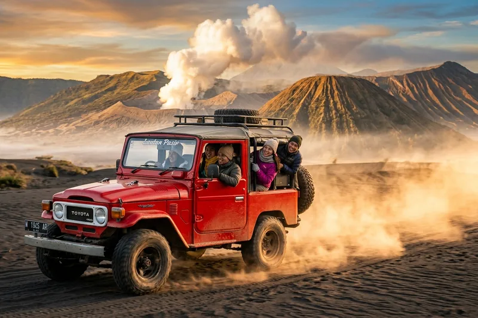

Wisata Bromo Jawa Timur menawarkan pengalaman menyaksikan matahari terbit di kawasan pegunungan berpasir dengan latar Gunung Bromo yang aktif, menjadikannya salah satu destinasi alam paling ikonik di provinsi ini.
Ringkasan Inti
- Gunung Bromo berada dalam kawasan Taman Nasional Bromo Tengger Semeru.
- Titik Penanjakan menjadi lokasi favorit untuk menyaksikan sunrise.
- Jeep wisata adalah moda transportasi utama menuju kawasan lautan pasir.
- Wisata Bromo sering digabung dengan destinasi lain seperti Kawah Ijen.
- Waktu kunjungan terbaik umumnya dini hari sebelum matahari terbit.
1. Apa Daya Tarik Utama Wisata Bromo Jawa Timur?
Daya tarik utama wisata Bromo Jawa Timur adalah pemandangan matahari terbit di atas kawah aktif yang dikelilingi lautan pasir, menciptakan panorama yang menjadi ciri khas kawasan Tengger.
Gunung Bromo merupakan bagian dari kompleks Taman Nasional Bromo Tengger Semeru, yang juga mencakup Gunung Semeru sebagai gunung tertinggi di Pulau Jawa. Kombinasi kawah aktif, hamparan pasir vulkanik, serta latar pegunungan menjadikan kawasan ini memiliki bentang alam yang jarang ditemukan di lokasi lain.
Selain aspek alam, kawasan Bromo juga memiliki nilai budaya karena menjadi tempat tinggal masyarakat suku Tengger yang masih menjalankan tradisi dan upacara adat, termasuk upacara Yadnya Kasada yang dikenal luas oleh wisatawan domestik maupun mancanegara.
2. Bagaimana Cara Menuju Kawasan Wisata Bromo?
Kawasan wisata Bromo dapat diakses melalui beberapa pintu masuk utama, seperti Probolinggo, Malang, Pasuruan, dan Lumajang, dengan titik keberangkatan yang paling umum digunakan wisatawan adalah melalui Probolinggo atau Malang.
Dari arah Probolinggo, wisatawan biasanya menuju Desa Cemoro Lawang sebagai titik awal sebelum melanjutkan perjalanan dengan jeep menuju area lautan pasir dan titik pandang sunrise. Jalur ini populer karena akses jalan yang relatif mudah dan banyak tersedia penginapan di sekitar kawasan tersebut.
Dari arah Malang, wisatawan dapat menuju kawasan Bromo melalui jalur Tumpang atau Poncokusumo, yang juga menyediakan akses jeep menuju titik pandang alternatif. Jalur ini sering dipilih wisatawan yang menggabungkan kunjungan Bromo dengan destinasi wisata di kawasan Malang dan sekitarnya.
3. Kapan Waktu Terbaik Menyaksikan Sunrise di Bromo?
Waktu terbaik menyaksikan sunrise di Bromo adalah pada dini hari, biasanya wisatawan sudah berada di titik pandang seperti Penanjakan sebelum pukul 04.30 agar tidak melewatkan momen matahari terbit.
Perjalanan menuju titik pandang umumnya dimulai dari penginapan sekitar pukul 02.00 hingga 03.00 dini hari menggunakan jeep wisata, mengingat jarak dan kondisi jalan menanjak menuju area Penanjakan. Suhu udara pada jam tersebut cenderung sangat dingin, sehingga pakaian hangat menjadi perlengkapan wajib.
Secara musiman, periode kemarau dianggap lebih ideal untuk melihat sunrise dengan langit yang lebih cerah, meskipun kondisi cuaca pegunungan tetap dapat berubah sewaktu-waktu tergantung kondisi atmosfer setempat.
Baca Juga
4. Apa Saja Aktivitas Lain di Kawasan Wisata Bromo?
Selain menyaksikan sunrise, aktivitas populer di kawasan wisata Bromo meliputi menjelajahi lautan pasir dengan jeep, mendaki menuju bibir kawah, serta mengunjungi Bukit Teletubbies yang dikenal dengan hamparan bukit hijau.
Wisatawan yang ingin lebih dekat dengan kawah dapat melanjutkan perjalanan dari area parkir jeep menuju bibir kawah Bromo menggunakan jalur pejalan kaki atau menyewa jasa kuda yang disediakan warga setempat. Dari bibir kawah, pengunjung dapat menyaksikan langsung aktivitas vulkanik dari jarak yang telah ditentukan aman oleh pengelola kawasan.
Bukit Teletubbies, yang terletak tidak jauh dari lautan pasir, juga menjadi titik favorit karena kontur bukit hijau yang landai dan cocok untuk berfoto, terutama pada musim ketika vegetasi sedang tumbuh subur.
5. Bagaimana Menggabungkan Wisata Bromo dengan Kawah Ijen?
Menggabungkan wisata Bromo dengan Kawah Ijen dapat dilakukan melalui itinerary dua hingga tiga hari yang memanfaatkan jalur darat antara kawasan Bromo Tengger Semeru menuju wilayah Banyuwangi tempat Kawah Ijen berada.
Pola perjalanan umum yang digunakan wisatawan adalah menyaksikan sunrise di Bromo pada hari pertama, kemudian melanjutkan perjalanan darat menuju Banyuwangi untuk beristirahat sebelum melakukan pendakian dini hari menuju Kawah Ijen pada hari berikutnya. Rute ini memanfaatkan kemiripan pola kunjungan kedua destinasi yang sama-sama mengandalkan momen dini hari.
Kombinasi ini menjadikan wisata Bromo Jawa Timur dan Kawah Ijen sebagai satu paket perjalanan yang efisien bagi wisatawan yang ingin mengeksplorasi destinasi alam ikonik di wilayah timur provinsi ini dalam waktu terbatas.
Wisata Bromo Jawa Timur menawarkan pengalaman alam yang khas melalui pemandangan sunrise, lautan pasir, dan kawah aktif, dengan akses yang dapat ditempuh dari beberapa arah seperti Probolinggo dan Malang.
Bagi wisatawan yang ingin memaksimalkan perjalanan, menggabungkan kunjungan Bromo dengan Kawah Ijen dalam satu itinerary dapat menjadi pilihan efisien untuk menikmati dua destinasi ikonik Jawa Timur sekaligus.